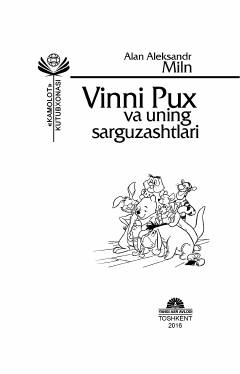

VPAyiqcha Vinni Puxning o'rmondagi quvnoq va maroqli sarguzashtlari.
Bu kitob Alan Aleksandr Milnning mashhur 'Vinni Pux' asarining Zilola Jalolova tomonidan o'zbek tiliga qilingan tarjimasi bo'lib, birinchi qismini o'z ichiga oladi. Asarda ayiqcha Vinni Pux va uning do'stlarining o'rmondagi qiziqarli sarguzashtlari tasvirlanadi. Kitob yosh kitobxonlar uchun mo'ljallangan va 2016-yilda 'Yangi asr avlodi' nashriyotida chop etilgan.